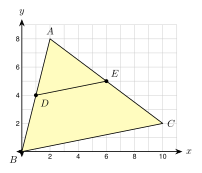

5.4 Triangle Proportionality
- Use a parallel line in a triangle to find lengths
- Decide if a segment in a triangle is parallel to a side
- Use the midsegment of a triangle
- Use three parallel lines to find lengths on two transversals
Warm-Up
1. Solve x12 = 58.
8x = 60, so x = 7.5
2. Find the midpoint of (2, 5) and (8, −1).
(2 + 82, 5 + (−1)2) = (5, 2)
3. △ ADE ∼ △ ABC, AD = 3, AB = 9, and DE = 5. Find BC.
39 = 5BC, so 3 · BC = 45 and BC = 15
5.4.1A Line Parallel to a Side
- If DE ∥ BC, then △ ADE ∼ △ ABC (see 5.3).
- The parts of the sides are proportional: ADDB = AEEC.
- Be careful: the ratio compares a part to a part, so use DB and EC, not AB and AC.
ADDB = AEEC, so 64 = 9x.
6x = 36, so x = 6.
EC = 6.
104 = x6, so 4x = 60 and AE = 15.
x6 = x + 29
9x = 6(x + 2)
9x = 6x + 12, so 3x = 12 and x = 4.
Check: 46 = 69.
5.4.2The Converse
- Converse: if ADDB = AEEC, then DE ∥ BC.
- To test, compare the two ratios. If they are equal, the segment is parallel.
- If the ratios are not equal, the segment is not parallel to the side.
a. In triangle (a), is DE ∥ BC?
b. In triangle (b), is DE ∥ BC?
a. ADDB = 69 = 23 and AEEC = 812 = 23. The ratios are equal. Yes, DE ∥ BC.
b. ADDB = 48 = 12 and AEEC = 515 = 13. The ratios are not equal. No.
5.4.3The Midsegment of a Triangle
- A midsegment joins the midpoints of two sides of a triangle.
- The midsegment is parallel to the third side.
- The midsegment is half as long as the third side.

a. BC = 18. Find DE.
b. DE = 3x + 1 and BC = 5x + 12. Find x and BC.
a. DE = 12(18) = 9.
b. BC = 2 · DE, so 5x + 12 = 2(3x + 1).
5x + 12 = 6x + 2, so x = 10.
BC = 5(10) + 12 = 62. (Check: DE = 31.)
b. DE = 2x + 4 and BC = 6x − 4. Find x.your turn
a. BC = 2(7.5) = 15.
b. 6x − 4 = 2(2x + 4), so 6x − 4 = 4x + 8, 2x = 12, and x = 6.

Midpoints: D = (2 + 02, 8 + 02) = (1, 4) and E = (2 + 102, 8 + 22) = (6, 5).
Slope of DE: 5 − 46 − 1 = 15. Slope of BC: 2 − 010 − 0 = 15. Equal slopes, so parallel.
DE = √52 + 12 = √26 and BC = √102 + 22 = √104 = 2√26.
So DE = 12 BC.
5.4.4Parallel Lines and Transversals
- Three parallel lines cut two transversals into proportional parts.
- If the parts on one transversal are a and b, and on the other are c and d, then ab = cd.
6090 = 80x
60x = 7200, so x = 120.
The second lot on 2nd Ave is 120 ft long.
4575 = 60x, so 45x = 4500 and x = 100 ft.
1. If DE ∥ BC in △ ABC, then ADDB = AEEC. The sides are cut in proportion.
2. If the two ratios are equal, then DE is parallel to BC. This is the converse.
3. A midsegment joins the midpoints of two sides. It is parallel to the third side and half as long.
4. Three parallel lines cut two transversals into proportional parts.
5. On a grid, use the midpoint formula and slopes to check a midsegment.
Practice
Use the figure. DE ∥ BC. Find the missing length

1. AD = 4, DB = 6, AE = 5. Find EC.
46 = 5x, so 4x = 30 and EC = 7.5
2. AD = 9, DB = 3, EC = 2. Find AE.
93 = x2, so AE = 6
3. AD = 6, AB = 10, AE = 9. Find EC.
DB = 4. 64 = 9x, so 6x = 36 and EC = 6
4. AB = 20, AD = 12, AE = 9. Find AC.
1220 = 9AC, so 12 · AC = 180 and AC = 15
5. AD = x, DB = 8, AE = x + 3, EC = 12. Find x.
x8 = x + 312, so 12x = 8x + 24 and x = 6
6. AD = 2x, DB = 9, AE = 8, EC = 6. Find x and AD.
2x9 = 86, so 12x = 72 and x = 6. AD = 12.
Is DE ∥ BC? Show the ratios
7. AD = 6, DB = 8, AE = 9, EC = 12
68 = 34 and 912 = 34. Yes.
8. AD = 5, DB = 7, AE = 10, EC = 15
57 ≈ 0.71 and 1015 ≈ 0.67. No.
9. AD = 3, AB = 9, AE = 4, AC = 12
DB = 6 and EC = 8. 36 = 48. Yes.
10. A triangle drawing has no marks and no numbers, but DE looks parallel to BC. Can you say it is parallel?
No. A figure only suggests it. We need marks or numbers.
D and E are midpoints of AB and AC
11. BC = 26. Find DE.
DE = 13
12. DE = 8.5. Find BC.
BC = 17
13. DE = 3x − 2 and BC = 4x + 8. Find x and DE.
4x + 8 = 2(3x − 2), so 4x + 8 = 6x − 4 and x = 6. DE = 16.
14. D, E, and F are the midpoints of the three sides of a triangle with sides 14, 20, and 18. Find the perimeter of △ DEF.
Each side of △ DEF is half a side of the big triangle: 7 + 10 + 9 = 26.
Use coordinates
15. A(2, 1), B(6, 9), C(12, 3). M is the midpoint of AB and N is the midpoint of BC. Show that MN ∥ AC and MN = 12 AC.
M = (4, 5) and N = (9, 6). Slope of MN is 15. Slope of AC is 210 = 15. Parallel. MN = √26 and AC = √104 = 2√26, so MN = 12 AC.
Parallel lines and transversals
16. Three parallel streets cross two avenues. On one avenue the lots are 50 ft and 70 ft. On the other avenue the first lot is 75 ft. Find the second lot.
5070 = 75x, so 50x = 5250 and x = 105 ft
17. Three parallel shelf boards are fixed to two slanted posts. On the left post the gaps are 12 in and 18 in. On the right post the first gap is 14 in. Find the second gap.
1218 = 14x, so 12x = 252 and x = 21 in
18. Four parallel lines cut two transversals. On the first, the parts are 2, 3, and 5. On the second, the first part is 6. Find the other two parts.
26 = 3y, so y = 9. 26 = 5z, so z = 15.
19. Three parallel lines cut two transversals. On one, the parts are 6 and 4. On the other, the parts are x + 1 and x − 1. Find x.
64 = x + 1x − 1, so 6x − 6 = 4x + 4, 2x = 10, and x = 5.
Find the mistake
20. In a triangle, DE ∥ BC, AD = 4, DB = 2, and DE = 6. Hnin writes ADDB = DEBC and gets BC = 3. Find her mistake. Then find BC.
The ratio ADDB compares two parts of a side. It is not equal to DEBC. Her answer BC = 3 is shorter than DE, which cannot be. Correct: ADAB = DEBC, so 46 = 6BC and BC = 9.
Test Practice
21. In △ ABC, DE ∥ BC, with D on AB and E on AC. AD = 4, DB = 6, and AE = 6. What is the length of AC?
A. 9
B. 10
C. 15 ← correct
D. 22.5
22. A midsegment of a triangle has length 2x + 3. The side it is parallel to has length 5x − 6. What is x?
A. 4
B. 9
C. 12 ← correct
D. 15
Challenge
23. △ ABC has area 80 square inches. D, E, and F are the midpoints of its sides. The midsegments make four small triangles that are all congruent. What is the area of △ DEF? Check with k: △ ADE ∼ △ ABC with k = 12.
△ ADE has area (12)2 · 80 = 20 square in. The four small triangles are congruent, so △ DEF also has area 20 square in.